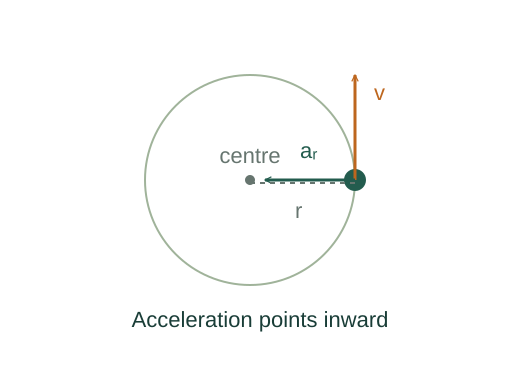
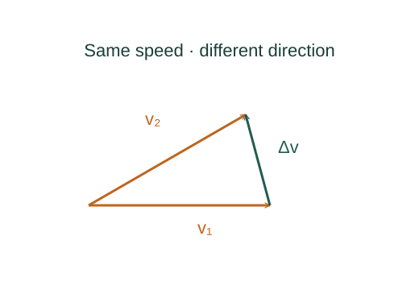

Why circular acceleration is v²/r
Even at constant speed, velocity changes as its direction turns. The acceleration comes from this directional change and points toward the centre of the circle.
What the symbols mean
r: fixed radius; v: speed; ω: angular speed in radians per second; Δθ: angle swept during Δt.
When this applies
The derivation uses uniform circular motion. For varying speed there is also tangential acceleration dv/dt.

Compare two nearby velocity vectors
The vectors have the same length v. Rotate one through Δθ to obtain the other. The tip-to-tip difference has length 2v sin(Δθ/2).
Take the short-time limit
As the interval approaches zero, sin(Δθ/2)/(Δθ/2) approaches one. Thus the rate of velocity change becomes v times the angular turning rate.

Relate arc distance and angle
Radian measure is defined by arc length divided by radius. Differentiating s = rθ for fixed radius gives v = rω.
Identify the inward direction
The velocity is tangent to the path; the difference between nearby tangents points toward the centre in the limit. Newton’s law therefore requires an inward net force.
Go deeper at this stepWhich real force supplies this acceleration?What Newton’s second law assumesWhere each equation comes from
Derived equations link to an argument below. Definitions, physical postulates and constitutive models are identified as the inputs of that argument.
Derivation of the main resultDerived result
Conditions: The derivation uses uniform circular motion. For varying speed there is also tangential acceleration dv/dt.
- Compare two nearby velocity vectors. The vectors have the same length v. Rotate one through Δθ to obtain the other. The tip-to-tip difference has length 2v sin(Δθ/2). Explain the equation used in step 1 ↗
- Take the short-time limit. As the interval approaches zero, sin(Δθ/2)/(Δθ/2) approaches one. Thus the rate of velocity change becomes v times the angular turning rate. Explain the equation used in step 2 ↗
- Relate arc distance and angle. Radian measure is defined by arc length divided by radius. Differentiating s = rθ for fixed radius gives v = rω. Explain the equation used in step 3 ↗
- Identify the inward direction. The velocity is tangent to the path; the difference between nearby tangents points toward the centre in the limit. Newton’s law therefore requires an inward net force. Explain the equation used in step 4 ↗ Which real force supplies this acceleration? ↗
Equation in step 1Derived result
What is being shown: Compare two nearby velocity vectors
The vectors have the same length v. Rotate one through Δθ to obtain the other. The tip-to-tip difference has length 2v sin(Δθ/2).
Starting conditions and inputs: The derivation uses uniform circular motion. For varying speed there is also tangential acceleration dv/dt.
Equation in step 2Derived result
What is being shown: Take the short-time limit
As the interval approaches zero, sin(Δθ/2)/(Δθ/2) approaches one. Thus the rate of velocity change becomes v times the angular turning rate.
Earlier results used in this argument:
- |Δ𝐯| = 2v sin(Δθ/2) (Derived result)
Equation in step 3Derived result
What is being shown: Relate arc distance and angle
Radian measure is defined by arc length divided by radius. Differentiating s = rθ for fixed radius gives v = rω.
Earlier results used in this argument:
- |Δ𝐯| = 2v sin(Δθ/2) (Derived result)
- a = lim |Δ𝐯|/Δt = v(dθ/dt) = vω (Derived result)
Equation in step 4Derived result
What is being shown: Identify the inward direction
The velocity is tangent to the path; the difference between nearby tangents points toward the centre in the limit. Newton’s law therefore requires an inward net force.
Earlier results used in this argument:
- |Δ𝐯| = 2v sin(Δθ/2) (Derived result)
- a = lim |Δ𝐯|/Δt = v(dθ/dt) = vω (Derived result)
- a = v(v/r) = v²/r (Derived result)
A worked example
A body moving at 6 m/s around a 3 m radius circle has inward acceleration 12 m/s². Doubling the speed multiplies this acceleration by four.
Derivation behind this calculation ↗A point to keep straight
Centripetal force names the inward net force. It is supplied by actual interactions such as tension, gravity, or friction.
Check the assumptions and derivation ↗